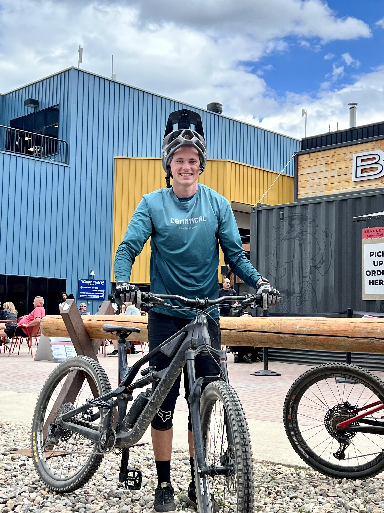

My name is Elijah Paulman and I am a first year computer science and engineering student at The Ohio State Univerisity. I am passionate about technology and the different ways it can be used to solve problems in our lives. I have two dogs, love being outdoors, and have a passion for skiing and mountain biking. Follow me on my journey through Software 1: 2221.

| Bike Type | Brand | Color |
|---|---|---|
| Trail | Canyon | Black |
| Dirt Jump | Commencal | Silver |